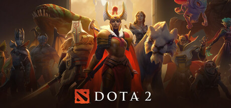
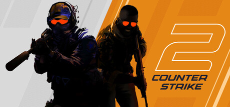

FN01
Королевская битваFortnite
Сражения на выживание, яркий мир и строительство в реальном времени.
Почему популярна
Обновления, игровые события и активное сообщество.
Разные миры. Общий интерес.
Что объединяет игроков и заставляет возвращаться?
От командных матчей до собственных миров — главные особенности игр из исследовательского проекта.
Порядок соответствует документу и не обозначает места в текущем мировом рейтинге: сопоставимая статистика аудитории в исходной работе не приведена.
Показано 10 из 10 игр
Сражения на выживание, яркий мир и строительство в реальном времени.
Обновления, игровые события и активное сообщество.
Две команды по пять игроков выбирают чемпионов с уникальными способностями.
Командная стратегия, разнообразие героев и крупные турниры.
Исследование Азерота, задания, развитие персонажа и совместные сражения.
Богатая вселенная, гильдии и долгосрочные цели.
Строительство, исследование и выживание в процедурно созданном мире.
Свобода творчества и совместная игра на серверах.
Командный шутер, в котором решают точность, тактика и взаимодействие.
Соревновательная глубина и киберспорт. В документе — CS:GO (2012); её преемник — Counter-Strike 2 (2023).
Тактические перестрелки сочетаются с уникальными способностями агентов.
Разнообразие командных комбинаций и соревновательный формат.
Экипаж выполняет задания и пытается обнаружить предателей на корабле.
Простые правила, общение и непредсказуемые обсуждения.
Командная королевская битва с героями, у каждого из которых свои способности.
Быстрый темп, командная игра и разные стили боя.
Командная стратегия: выбор героев, развитие и борьба за базу противника.
Глубокая тактика, сообщество и турнир The International.
Платформа, на которой пользователи создают собственные игровые миры.
Многообразие пользовательских проектов и возможности для творчества.
Активные игроки и их возвращение в игру помогают понять, насколько устойчив интерес.
Совместная игра, стримы и турниры делают игровые миры местом общения.
Стратегия, прогресс, награды и персонализация дают новые цели и способы играть.
Обновления и поддержка помогают сохранять интерес. Доходы отражают коммерческий успех, но не заменяют показатели аудитории.
Онлайн-игры развивались вместе с сетями, компьютерами и привычками игроков.
Текстовые многопользовательские миры, включая MUD, позволяют людям взаимодействовать через сеть.
Развитие интернета открывает дорогу постоянным виртуальным мирам. Ultima Online выходит в 1997 году.
MMORPG, командные шутеры и другие сетевые жанры формируют большие сообщества.
Смартфоны, трансляции и киберспорт расширяют аудиторию и выводят игры за рамки одного экрана.

Турниры превращают игровые навыки в соревнование, а совместная игра учит координировать действия.

Кланы, гильдии и общие интересы помогают находить единомышленников и обмениваться опытом.

Игровые образы становятся частью мемов, трансляций, фанатского искусства и массовой культуры.
Направления развития из проекта — возможности, а не гарантированный прогноз.
Новые способы взаимодействия с игровым пространством и более глубокое погружение.
Запуск игры на удалённом оборудовании. Доступность зависит от сервиса и качества соединения.
Более адаптивные персонажи и инструменты персонализации игрового опыта.
Совместное творчество, пользовательский контент и постоянные игровые события.
Онлайн-игры объединяют людей благодаря сочетанию интересных механик, общения и творчества. Их развитие важно рассматривать вместе с ответственным отношением к игре.
Основной источник — предоставленный документ. Тексты сокращены для сайта; недоказанные прогнозы и неподтверждённые библиографические записи не перенесены.
Valve: переход от CS:GO к Counter-Strike 2Mojang: о Minecraft и датах выпуска